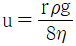
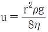
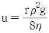
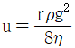
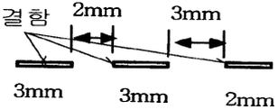

침투비파괴검사기사 (2017-09-23 기출문제)
1과목: 비파괴검사 개론
1. 시험체가 변형될 때 그 시험체의 표면에 부착시켜 놓은 센서의 전기적인 변화를 측정함으로써 변형에 대한 모니터링이 가능한 특수비파괴검사법은?
- 전위차시험
- 스트레인측정시험
- 전자포음파공명시험
- 기체 방사성동위원소시험
(정답률: 53%)

2. 1.0atm에 대한 기압 단위의 환산이 틀린 것은?
- 7.6torr
- 14.9psi
- 101.3kPa
- 760mmHg
(정답률: 65%)
3. 강 용접부(20mm 두께)내 융합부족이나 균열을 가장 잘 검출할 수 있는 비파괴검사법은?
- 침투탐상검사
- 초음파탐상검사
- 자분탐상검사
- 누설검사
(정답률: 66%)
4. 자분탐상검사에서 결함에 의한 누설자속에 대한 설명 중 옳은 것은?
- 강자성체에 발생하는 자속은 자계의 세기와 함께 감소한다.
- 자분탐상검사에서 시험체에 자계를 주어 자속을 발생시킨 경우, 자력선이 결함에 가능한 한 많이 차단되지 않는 방향의 자계를 이용할 필요가 있다.
- 강자성체 중에 자속이 포화되어 그 이상 자속이 흐르지 않는 상태를 최대자속의 상태라 부르고, 이 때 단위단면적당의 자속량을 자속밀도라 부른다.
- 시험체 표면에 요철이 있는 경우, 포화자속밀도에 도달하면 요철부에도 누설자속이 많이 형성되어 자분을 집적하고 결함자분모양의 식별이 곤란해진다.
(정답률: 54%)
5. 다음 중 비파괴검사에 대한 설명으로 잘못된 것은?
- 비파괴검사는 모든 종류의 결함을 검출할 수 있다.
- 비파괴검사는 시험체를 파괴시키지 않고 원형을 보존하며 검사하는 방법을 말한다.
- 비파괴검사는 재료의 물리적 성질이 결함의 존재에 의하여 변화하는 현상을 이용한다.
- 비파괴검사는 제품의 사용 수명 내에 영향을 미치는 결함을 검출하고 제거함으로써 제품의 신뢰도를 높일 수 있다.
(정답률: 76%)
6. 바이트,, 다이스 등에 사용되는 합금 공구강 강재의 한국산업표준 기호로 옳은 것은?
- STS
- STB
- SCM
- STR
(정답률: 55%)
7. 실루민을 개량처리하는 이유로 옳은 것은?
- 공정부근의 주조조직으로 나타나는 Si를 미세화 시키기 위해
- 공석부근의 주조조직으로 나타나는 Al를 미세화 시키기 위해
- 공정부근의 주조조직으로 나타나는 Zn를 미세화 시키기 위해
- 공석부근의 주조조직으로 나타나는 Sn를 미세화 시키기 위해
(정답률: 68%)
8. Sn-Sb-Cu계 합금으로 주석계 화이트 메탈의 명칭은?
- 다우(doe)메탈
- 배빗(babbit)메탈
- 바이(Bai)메탈
- 플래티나이트(platinite)
(정답률: 68%)
9. 현미경조직을 관찰하기 위해 철강의 조직을 부식하는 데 가장 적합한 부식액은?
- 왕수
- 나이탈 용액
- 염화제2철 용역
- 수산화나트륨 용액
(정답률: 45%)
10. 강에서 마텐자이트조직이 경도가 큰 이유가 아닌 것은?
- 결정의 미세화
- 급냉으로 인한 내부 응력
- 탄소원자에 의한 Fe 격자의 강화
- 확산변태에 의한 시멘타이트의 분리
(정답률: 66%)
11. 구리를 진공 용해하여 0.001~0.002%의 O2함량을 가지며 유리의 봉착성이 좋아 진공관용 재료 및 전자기기 등에 이용되는 재료는?
- 무산소동
- 탈산동
- 전기동
- 정련동
(정답률: 59%)
12. Al에 약 10%까지의 Mg을 품는 합금으로 강도, 연신성, 내식성을 목적으로 사용하는 것은?
- 라우탈(Lautal)
- 와이 합금(Y-alloy)
- 하이드로 날륨(Hydronaium)
- 로엑스 합금(Lo-Ex alloy)
(정답률: 40%)
13. 로크웰 경도시험에서 원뿔형 다이아몬드콘 압입체의 꼭지각 각도는 얼마인가?
- 60도
- 120도
- 136도
- 145도
(정답률: 65%)
14. Mg 합금이 구조재료로써 갖는 특성에 관한 설명으로 틀린 것은?
- 소성가공성이 높아 상온변형이 쉽다.
- 비강도가 커서 항공우주용 재료에 유리하다.
- 감쇠능이 주철보다 커서 소음방지 재료로 우수하다.
- 기계가공성이 좋고 아름다운 절삭면이 얻어진다.
(정답률: 60%)
15. 금속초미립자의 특성에 대한 설명으로 옳은 것은?
- 융점이 금속덩어리보다 높다.
- 활성이 약하여 화학반응을 일으키지 않는다.
- Fe계 합금 초미립자는 금속덩어리보다 자성이 약하다.
- 저온에서 열저항이 매우 작아 열의 양도체이다.
(정답률: 43%)
16. 강의 용착 금속 결함 중 은점(Fish eye) 발생의 가장 큰 원인이 되는 가스는?
- 질소
- 수소
- 헬륨
- 이산화탄소
(정답률: 69%)
17. 가스텅스텐아크용접(TIG용접)에 관한 설명으로 옳은 것은?
- 직류정극성의 경우 비드 폭이 넓고 용입이 얇다.
- 직류역극성의 경우 비드 폭이 좁고 용입이 깊다.
- 직류 역극성으로 용접 시 산화 피막을 제거하는 청정 작용이 있다.
- 고주파 교류를 사용하면 청정 효과를 얻을 수 없어 알루미늄 용접에 부적당하다.
(정답률: 52%)
18. 용접법을 3가지로 대분류할 때 포함되지 않는 것은?
- 리벳
- 압접
- 납땜
- 융접
(정답률: 72%)
19. 연강용 가스 용접봉의 성분 중 유황(S)이 모재에 미치는 영향으로 올바른 것은?
- 강에 취성을 주며 가연성을 잃게 한다.
- 기공은 막을 수 있으나 강도가 떨어진다.
- 강의 강도를 증가시키나 연신율, 굽힙성 등이 감소된다.
- 용접부의 저항력을 감소시키고 기공 발생의 원인이 된다.
(정답률: 46%)
20. 용접부 검사방법 중 파괴검사에 속하는 것은?
- 와류 검사
- 초음파 검사
- 방사선 투과 검사
- 현미경 조직 검사
(정답률: 72%)
2과목: 침투탐상검사 원리
21. 침투탐상검사를 하기 위한 일반적인 전처리 방법이 아닌 것은?
- 증기 탈지법
- 브라스팅법
- 산 세척법
- 초음파 세척법
(정답률: 53%)
22. 침투탐상검사에서 접촉각과 표면장력과는 어떠한 관계가 성립하는가?
- 파스칼의 원리(Pascal's priciple)
- 영의 방정식(Young's equation)
- 쿰롱의 법칙(Coulomb's law)
- 보일-샤를의 법칙(Boyle-Charles' law)
(정답률: 40%)
23. 저합금강 용접부의 침투탐상검사 시 적절한 검사 시기는?
- 고장력강은 용접 후 바로 실시
- 최종검사는 열처리 후 실시
- 개선면은 실시할 필요가 없음
- 용접부의 덧살 제거 시에는 덧살 제거 전 실시
(정답률: 70%)
24. 일반적으로 이원성 형광침투탐상검사에 적용하지 않는 현상 방법은?
- 건식 현상법
- 비수성 습식 현상법
- 속건식 현상법
- 무현상법
(정답률: 38%)
25. 침투탐상검사 시 건식 현상제보다 습식 현상제를 택할 수 있는 시험부품으로 적당한 것은?
- 표면이 거친 주물
- 다듬질한 톱니바퀴와 L형 부품
- 평평하고 매끄러운 표면의 부품
- 습식 현상제는 위의 어느 부품에도 사용할 수 없음
(정답률: 56%)
26. 보관이나 기타의 조건으로 인해 침투제의 형광성능을 평가할 경우 통상적으로 어떤 결과를 비교하는가?
- 지시에서 발산되는 실제 빛의 양을 조도계로 측정
- 재료를 형광화 하는데 소요되는 자외선의 양을 강도계로 측정
- 다른 침투제와 비교하여 형광물질에서 발산되는 빛의 상대량을 육안으로 관찰
- 주위에서 발산되는 빛과 비교하여 형광물질에서 발산되는 빛의 상대량을 로그 그래프로 비교
(정답률: 60%)
27. 침투탐상검사 시 사용되는 건식 현상제의 특성으로 옳은 것은?
- 불수용성이다.
- 정밀검사에 용이하다.
- 덩어리로 보관이 용이하다.
- 침투액의 적용이 필요 없다.
(정답률: 48%)
28. 다름 침투탐상검사와 비교할 때 후유화성 형광침투탐상검사의 장점으로 옳은 것은?
- 모래 주조물(Sand Casting)과 같은 거친 표면을 검사하는 데 좋다.
- 다른 침투탐상검사 방법보다 공정이 비교적 간단하다.
- 전기분해로 얇은 보호막을 입힌 표면에 적용ㄷ할 수 있다.
- 넓고 얕은 결함을 탐지하는 데 적합하다.
(정답률: 68%)
29. 침투탐상검사 시 검출하기 가장 어려운 결함은 어떤 것인가?
- 깊이가 얕고 넓이가 큰 결함
- 깊이가 깊은 구멍
- 단조 겹침
- 깊이가 깊고 넓이가 작은 결함
(정답률: 43%)
30. 침투탐상검사에 사용하는 현상제의 특성으로 틀린 것은?
- 형광 침투제의 사용시에는 형광물질이어야 한다.
- 검사원에게 유해하거나 독성이 있어서는 안된다.
- 흡수력이 있어야 한다.
- 전면에 걸쳐 얇고 균일한 피막을 형성할 수 있어야 한다.
(정답률: 59%)
31. 특수 목적에 사용되는 입자여과법에 관한 설명 중 틀린 것은?
- 다공성 재질의 시험체를 검사하는 방법이다.
- 형광 유색 액체에 입자를 현탁시켜 적용한다.
- 불연속부에 보다 많은 입자가 축적되는 현상을 관찰한다.
- 검사 감도는 낮아 미세한 결함 검출에는 적합하지 않다.
(정답률: 44%)
32. 사형(砂型) 주물과 같은, 특히 표면이 거친 부품에 다음 중 가장 적용하기 어려운 침투탐상검사 방법은?
- 수세성 염색침투탐상검사
- 용제 제거성 형광침투탐상검사
- 수세설 형광침투탐상검사
- 후유화성 형광침투탐상검사
(정답률: 38%)
33. 침투탐상검사에서 관찰 조건으로 적합하지 않은 것은?
- 반사광이 눈에 비치는 것은 관찰하는데 도움이 된다.
- 관찰 각도는 수직에 가까울수록 좋다.
- 눈과 광원과의 배치관계가 중요하다.
- 관찰면에서 60cm 이상 떨어져서는 안된다.
(정답률: 66%)
34. 침투탐상검사에서 균열이 비교적 깊고 폭이 넓으며 뚜렷하게 나타나는 지시모양은?
- 피로균열(Fatigue Crack)
- 연마균열(Grinder Crack)
- 담금질균열(Quenching Crack)
- 수축균열(Shrink Crack)
(정답률: 34%)
35. 침투탐상검사에서 탐상제 및 장치의 점검 주기 중 매일 해야 하는 것은?
- 건조기의 기내 온도 분포의 균일성
- 수세성 침투액의 수분함유량
- 습식현상제의 농도
- 자외선 조사등의 강도
(정답률: 35%)
36. 염색침투탐상검사 시 침투액을 뜨거운 시험편에 적용할 때 나타나는 현상으로 옳은 것은?
- 가열된 시험편이나 차가운 시험편이나 침투액을 적용하는 데 있어서는 차이가 없다.
- 침투액이 가열되어 침투액 내의 구성요소 중 일부가 빨려 나와 시험편에 잔류물질을 만들어 낸다.
- 침투액은 시편이 냉각됨에 따라 시험편 내부로 스며들어 간다.
- 시험편의 온도가 높아질수록 감도가 좋아진다.
(정답률: 70%)
37. 다음 침투탐상검사와 비교하여 용제제거성 염색침투탐상검사의 주된 단점은?
- 탐상감도가 낮은 것이 단점이다.
- 전원을 필요로 하는 단점이 있다.
- 규정된 거치식 장비를 구비해야 하는 단점이 있다.
- 일광 또는 백열등 하에서 시험할 수 없는 단점이 있다.
(정답률: 75%)
38. 침투탐상검사에 사용되는 침투제의 성질을 바르게 성질을 바르게 설명한 것은?
- 침투제는 휘발성이 높을수록 좋다.
- 침투제는 물에 용해되지 않는 성질이 있다.
- 세척성 또는 제거성이 좋아야 한다.
- 침투제는 불연속으로의 침투를 돕기 위해 산성이어야 한다.
(정답률: 56%)
39. 100℃ 운전 플랜드의 용접부에 대해 가장 적합한 검사 방법은?
- 수세성 형광침투탐상검사
- 후유화성 염색침투탐상검사
- 융제제거성 염색침투탐상검사
- 후유화성 형광침투탐상검사
(정답률: 33%)
40. 사용 중 검사의 침투탐상검사에서 검출하기 어려운 결함 종류는?
- 크리프 균열(creep crack)
- 피로 균열(fatigue crack)
- 응력부식 균열(stress corrosion crack)
- 크레이터 균열(crater crack)
(정답률: 29%)
3과목: 침투탐상검사 시험
41. 사용 중인 현상제에 대한 성능시험을 시행하여 부착상태의 불균일이 생겨 결함지시모양의 식별이 곤란하고 현상성능의 저하가 인정되었을 경우 처리 방법으로 옳은 것은?
- 폐기시킨다.
- 새로운 현상제를 25% 첨가하여 재사용한다.
- 새로운 현상제를 50% 첨가하여 재사용한다.
- 새로운 현상제를 95% 첨가하여 재사용한다.
(정답률: 74%)
42. 침투탐상검사에 사용되는 침투액의 필요한 특성이 아닌 것은?
- 색채 콘트라스트가 낮아야 한다.
- 중성으로 부식성이 없어야 한다.
- 인화점이 높아야 한다.
- 독성이 적어야 한다.
(정답률: 78%)
43. 침투탐상검사로 검출이 가능한 결함에 대한 설명으로 옳은 것은?
- 표면 결함은 모두 탐상이 가능하다.
- 표면으로 열려 있는 균열 뿐 아니라 모든 결함을 탐상될 수 있다.
- 표면 결함도 침투탐상검사로 탐상되지 않는 경우도 있다.
- 표면 및 표면 직하의 결함 탐상이 가능하다.
(정답률: 60%)
44. 침투탐상검사에서 액체의 유동속도(침투속도) u를 나타내는 식으로 옳은 것은? (단, 모세관의 반지름은 r, 액체의 점성은 η, 액체의 밀도는 ρ, 중력가속도는 g이다.)




(정답률: 63%)
45. 침투탐상검사 시 침투시간을 결정하는데 고려해야 할 인자와 거리가 먼 것은?
- 시험체의 재질
- 시험체의 선팽창계수
- 예측되는 결함의 종류
- 시험체와 침투액의 온도
(정답률: 58%)
46. 수세성 형광침투탐상검사에서 침투액의 세척처리 시 보통 적용하는 분무 각도와 수압으로 옳은 것은?
- 각도 30°, 수압 0.5~1kgf/cm2
- 각도 35°, 수압 1~1.5kgf/cm2
- 각도 35°, 수압 1.5~2kgf/cm2
- 각도 45°, 수압 1.5~2kgf/cm2
(정답률: 44%)
47. 침투탐상검사에서 전처리 방법 중 증기세척의 가장 큰 특징은?
- 산화물, 유기물의 제거에 좋다.
- 스케일, 슬래그의 제거에 좋다.
- 스케일 및 솔벤트, 알칼리용액의 제거에 좋다.
- 절삭유, 연마제, 그리스 등의 제거에 좋다.
(정답률: 58%)
48. 침투탐상검사에 사용되는 유화제의 특성에 관한 사항 중 틀린 것은?
- 유화성이 좋아야 한다.
- 세척성이 좋아야 한다.
- 침투성이 높아야 한다.
- 인화성이 높아야 한다.
(정답률: 57%)
49. 침투탐상검사용 장치가 구비해야 할 최소요건과 가장 거리가 먼 것은?
- 결함을 확실히 검출할 수 있어야 한다.
- 조작이 간편하고 안전해야 한다.
- 형상 및 크기에 관계없이 규격 등에 요구되는 조건을 만족해야 한다.
- 장치의 관리가 쉬어야 한다.
(정답률: 60%)
50. 수도 및 전원 설비가 없는 장소에서 침투탐상검사를 실시할 경우 어느 침투액을 사용하는 것이 좋은가?
- 용제제거성 염색침투액
- 용제제거성 형광침투액
- 후유화성 염색침투액
- 후유화성 형광침투액
(정답률: 70%)
51. 침투탐상검사에 적용하는 현상방법 중 건식현상법의 적용 방법으로 옳지 않은 것은?
- 매몰법
- 분무법
- 붓칠법
- 공기 교반법
(정답률: 47%)
52. 침투탐상시험법으로 유리의 미세균열을 탐상하고자 할 때 가장 효과적인 방법은?
- 후유화성 염색침투탐상시험법
- 후유화성 형광침투탐상시험법
- 하전입자(Electrified Particle)법
- 입자여과(Filtered Particle)법
(정답률: 56%)
53. 탄소강 재질의 배관요업부에 존재하는 결함 중 자분탐상검사와 비교하여 침투탐상검사에서는 검출이 불가능한 것은?
- 표면균열
- 연마균열
- 크레이터균열
- 루트부균열
(정답률: 46%)
54. 침투탐상제를 취급할 때의 안전조치 사항이 아닌 것은?
- 침투탐상제가 피부나 의복에 접촉되지 않도록 한다.
- 증기나 분말을 들이 마시지 않도록 한다.
- 불꽃을 튀기는 장비나 화기 근처에서는 절대 탐상을 금한다.
- 침투탐상제가 자외선등에 노출되지 않도록 한다.
(정답률: 74%)
55. 과세척이 발생할 수 있어 결함 검출감도의 저하가 예상되며 폭이 넓고 얕은 결함 검사에 효과적인 침투탐상검사는?
- 수세성 형광침투탐상
- 용제제거성 형광침투탐상
- 후유화성 형광침투탐상
- 수세성 염색침투탐상
(정답률: 59%)
56. 침투액의 인화점이 낮은 경우 탐상검사에서 특히 고려하여야 하는 것은?
- 화재의 위험성
- 표면장력의 정도
- 모세관현상의 정도
- 검사자의 마취성
(정답률: 71%)
57. 강 용접부 침투탐상시험 시 관찰에 관한 설명으로 옳은 것은?
- 현상처리 후 가능한 빠른 시간 내에 실시하는 것이 좋다.
- 시간의 경과와 함께 지시모양이 변하기 때문에 가능한 오랜시간 후 실시하는 것이 좋다.
- 지시모양과 시간의 경과와는 무관하기 때문에 검사자 임의대로 실시해도 무방하다.
- 소정의 현상시간이 경과한 후 즉시 최종적인 관찰을 완료해야 한다.
(정답률: 52%)
58. 주조품에 나타나는 결함으로 시험체의 두께 차이에 따른 응고 속도의 차이에 의해 발생하는 고온균열의 일종으로 다양한 폭과 여러 개의 가지가 달린 구불구불한 선 형태로 나타나는 지시는?
- 랩(Lap)
- 수축공(Shrinkage Cavity)
- 핫티어(Hot Tear)
- 콜트셧(Cold Shut)
(정답률: 42%)
59. 침투데의 점성(Viscosity)은 탐상감도에 영향을 미친다. 그 영향이란 주로 어떤 것인가?
- 침투제의 세척성
- 오염물질의 수용성
- 발산되는 형광 성능
- 침투제가 결함 속으로 들어가는 속도
(정답률: 71%)
60. 수현탁성 현상제를 사용하는 것은 분말현상제를 사용하는 것보다 건조과정의 시간은 더 걸리나, 일반적으로 작은 균열에 대하여 더 좋은 탐상감도를 나타낸다. 그 주된 이유는?
- 분말 현상제보다 수현탁성 현상제가 분해력이 좋으므로
- 분말 현상제보다 수현탁성 현상제가 입자가 더 작기 때문에
- 분말 현상제보다 수현탁성 현상제가 표면에 더 잘 도포되므로
- 건조하는 과정에서 현상제와 시험면이 잘 밀착되어서 결함에 침투해 있던 침투액에 더욱 밀착되므로
(정답률: 53%)
4과목: 침투탐상검사 규격
61. 침투탐상 시험 방법 및 침투지시모양의 분류(KS B 0816)에 따른 수세성 유화제를 사용하여 잉여침투액을 제거하는 침투탐상시험 방법의 분류기호는?
- A
- B
- C
- D
(정답률: 33%)
62. 침투탐상 시험 방법 및 침투지시모양의 분류(KS B 0816)에서 침투지시모양의 관찰은 현상제 적용 후 최대 몇 분 까지가 바람직 한가?
- 60분
- 80분
- 100분
- 120분
(정답률: 77%)
63. 침투탐상 시험 방법 및 침투지시모양의 분류(KS B 0816)에 따라 시험하였더니 그림과 같은 결함이 나타났다. 이 결함의 개수와 길이는?

- 1개의 결함 8mm
- 1개의 결함 13mm
- 3개의 결함, 각각 3mm, 3mm, 2mm
- 2개의 결함, 각각 8mm, 2mm
(정답률: 58%)
64. 침투탐상 시험 방법 및 침투지시모양의 분류(KS B 0816)에 따르면 라미네이션(lamination)은 어느 침투지시모양에 속하겠는가?
- 연속 결함
- 선상 결함
- 분산 결함
- 원형상 결함
(정답률: 52%)
65. 보일러 및 압력용기에 대한 침투탐상검사(ASME Sec,V Art.6)에서 플라스틱 제품의 균열을 검출하기 위하여 권고하고 있는 침투제의 최소 침투시간(dwell time)은?
- 5분
- 7분
- 10분
- 15분
(정답률: 58%)
66. 침투탐상 시험 방법 및 침투지시모양의 분류(KS B 0816)에 규정된 침투시간의 설명 중 틀린 것은?
- 적절한 침투시간은 침투액의 성질, 적용 온도 등에 따라 좌우된다.
- 용접부 균열을 검출하기 위한 침투시간은 최소 5분이다.
- 어떤 경우라도 침투시간 중에 침투액은 건조시켜야 한다.
- 적절한 침투시간은 시험체 및 검출하여야 할 흠의 종류 등에 따라 좌우된다.
(정답률: 67%)
67. 보일러 및 압력용기에 대한 침투탐상검사(ASME Sec,V Art.24 SD-129)에 따라 침투제에 함유된 황의 양을 측정하기 위하여 200ml의 견본을 채취하여 얻은 BaSO4의 양이 0.5g, 백등유 200ml에서 얻은 BaSO4의 양이 0.1g 이었다면 황의 무게에 대한 백분율은 약 얼마인가?
- 0.002%
- 0.0027%
- 0.037%
- 0.⑤4%
(정답률: 41%)
68. 침투탐상 시험 방법 및 침투지시모양의 분류(KS B 0816)에서 유화시간과 관련한 내용으로 틀린 것은?
- 형광침투제-기름베이스 : 3분이내
- 형광침투제-물베이스 : 2분이내
- 염색침투제-기름베이스 : 30초이내
- 염색침투제-물베이스 : 30초이내
(정답률: 57%)
69. 침투탐상 시험 방법 및 침투지시모양의 분류(KS B 0816)에 따른 침투지시모양의 분류 내용이 틀린 것은?
- 종류에 구분하지 않고 결함의 길이에 따라 등급을 분류한다.
- 분산침투지시모양은 일정한 면적 내에 여러개의 침투지시모양이 분산하여 존재하는 침투지시모양이다.
- 독립침투지시모양 중 원형상 침투지시모양은 갈라짐에 의하지 않는 침투디시모양 중 선상침투지시모양 이외의 것이다.
- 독립침투지시모양 중 침투지시모양은 갈라짐 이외의 침투지시모양 가운데 그 길이가 나비의 3배 이상인 것이다.
(정답률: 59%)
70. 침투탐상 시험 방법 및 침투지시모양의 분류(KS B 0816)에서 암실에서 가시광의 밝기는 몇 룩스(lx) 이하이어야 하는가?
- 20 lx
- 50 lx
- 100 lx
- 200 lx
(정답률: 70%)
71. 보일러 및 압력용기에 대한 표준침투탐상검사(ASME Sec,V Art.24 SE-165)에서 규정한 잉여 침투액 제거용 물의 적정 온도범위는?
- 10~38℃
- 18~50℃
- 30~50℃
- 22~55℃
(정답률: 45%)
72. 침투탐상 시험 방법 및 침투지시모양의 분류(KS B 0816)에서 두 개의 선상 침투지시모양이 거의 동일 선상에 나란히 있을 때 연속 침투지시모양으로 분류하는 지시사이의 거리는 얼마인가?
- 5mm 이하
- 4mm 이하
- 2mm 이하
- 긴 쪽 침투지시모양 길이보다도 간격이 길 때
(정답률: 70%)
73. 침투탐상 시험 방법 및 침투지시모양의 분류(KS B 0816)에 따른 침투액의 점검 내용으로 틀린 것은?
- 사용중인 침투액의 성능시험을 하여 결함검출능력이 저하된 경우 폐기한다.
- 사용중인 침투액의 성능시험을 하여 침투지시모양, 휘도저하, 색상이 변한 경우 우선 먼저 사용한다.
- 사용중인 침투액의 겉모양 검사를 하여 현저환 흐림이나 침전물이 생겼을 때 폐기한다.
- 사용중인 침투액의 겉모양 검사를 하여 형광휘도의 저하, 색상의 변화, 세척성의 저하 등이 인정되었을 때 폐기한다.
(정답률: 69%)
74. 보일러 및 압력용기에 대한 표준침투탐상검사(ASME Sec,V Art.24 SE-165)에 따라 검사를 수행한 후 후처리에 관한 설명으로 옳은 것은?
- 건식현상제는 용제로 분무하여 제거한다.
- 습식현상제는 공기분무로 제거한다.
- 침투제 제거를 위한 초음파용제 세척은 3분 이상 적용한다.
- 잔류 침투액을 용제에 침적시켜 제거할 때 최소 1분 이상 적용한다.
(정답률: 34%)
75. 보일러 및 압력용기에 대한 침투탐상검사(ASME Sec,V Art.6)에서 침투제 및 시험체 표면의 온도를 몇 ℃의 범위로 표준 온도를 정하고 있는가?
- 0℃~25℃
- 0℃~42℃
- 5℃~52℃
- 20℃~125℃
(정답률: 68%)
76. 보일러 및 압력용기에 대한 침투탐상검사(ASME Sec,V Art.6)에 규정된 침투액 적용 방법이 아닌 것은?
- 침지(dipping)
- 붓기(flowing)
- 솔질(brushing)
- 분무(spraying)
(정답률: 42%)
77. 보일러 및 압력용기에 대한 침투탐상검사(ASME Sec,V Art.6)의 형광침투탐상검사에 대한 내용이 틀린 것은?
- 검사는 어두운 장소에서 수행한다.
- 깨진 자외선 필터는 즉시 교체해야 한다.
- 자외선 강도는 시험체 표면에서 1000μW/cm2 이상이어야 한다.
- 검사 전에 어두운 장소에서 최소 1분간 어둠에 적응해야 한다.
(정답률: 30%)
78. 보일러 및 압력용기에 대한 표준침투탐상검사(ASME Sec,V Art.24 SE-165)에 따라 유성유화제 적용에 대한 설명 중 틀린 것은?
- 세척시 수압은 275kPa 이하이다.,
- 물-공기 분무기의 경우 공기압은 172kPa이하이다.
- 물의 온도는 50℃ 이상을 유지한다.
- 유화제를 적용할 때, 분무, 붓칠 방법은 적용하지 않는다.
(정답률: 59%)
79. 침투탐상 시험 방법 및 침투지시모양의 분류(KS B 0816)에서 특별한 규정이 없는 한 장치를 사용하지 않아도 되는 시험방법은?
- VC-S
- VB-W
- FC-S
- VC-W
(정답률: 60%)
80. 보일러 및 압력용기에 대한 표준침투탐상검사(ASME Sec,V Art.24 SE-165)에 따라 시험체에 침투탐상검사 절차를 수행할 때 침투제 권고 최소 체류시간에 대한 침투제의 온도범위로 옳은 것은?
- 침투제의 온도범위는 4℃~38℃ 이다.
- 침투제의 온도범위는 4℃~52℃ 이다.
- 침투제의 온도범위는 10℃~28℃ 이다.
- 침투제의 온도범위는 10℃~52℃ 이다.
(정답률: 50%)